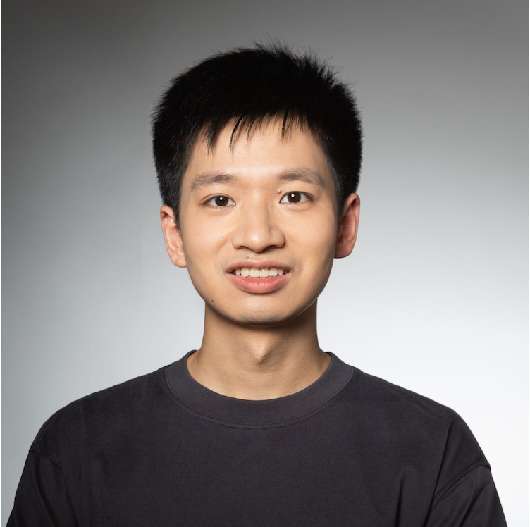
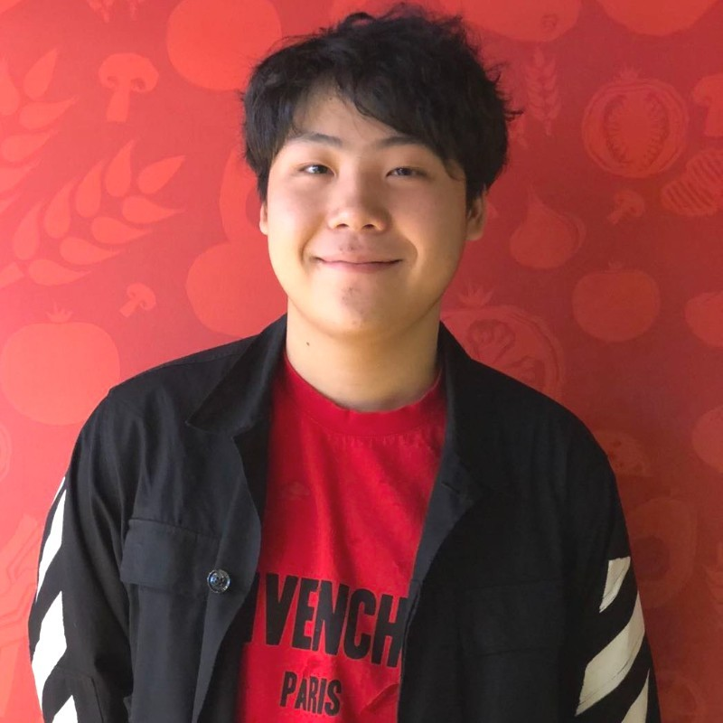
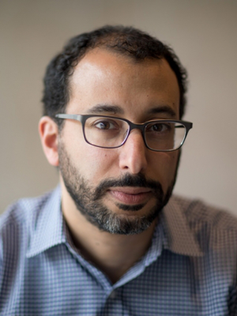
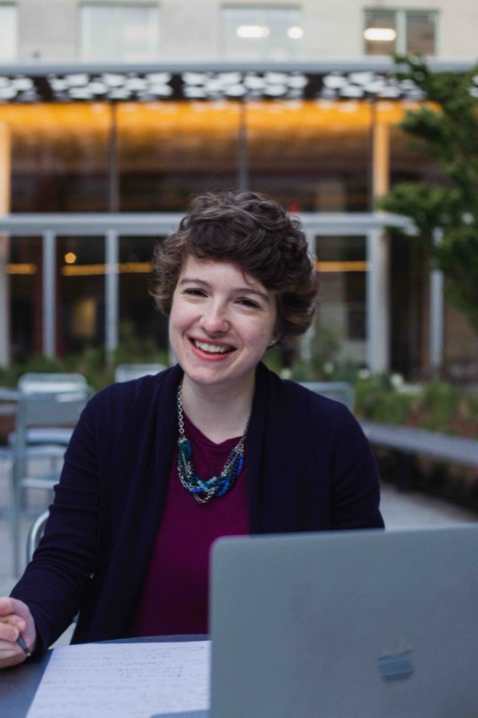
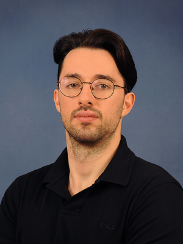
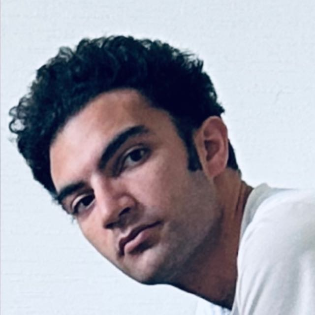
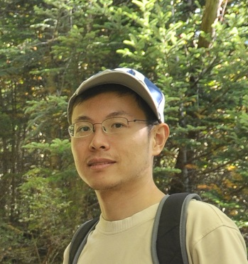
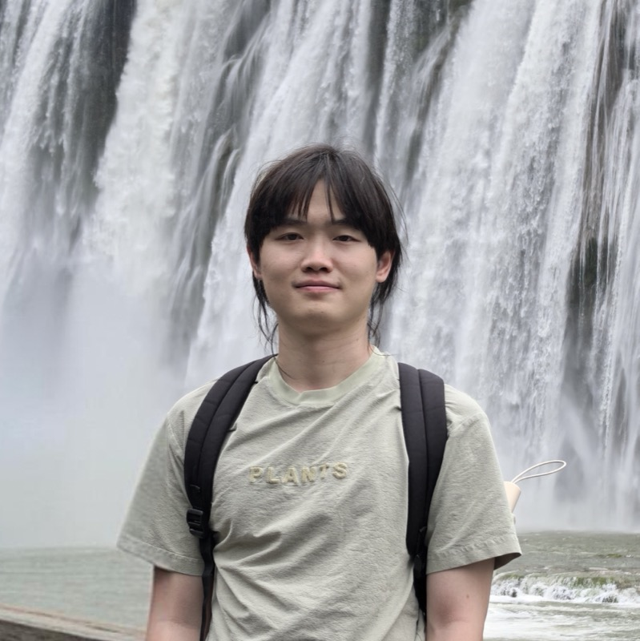
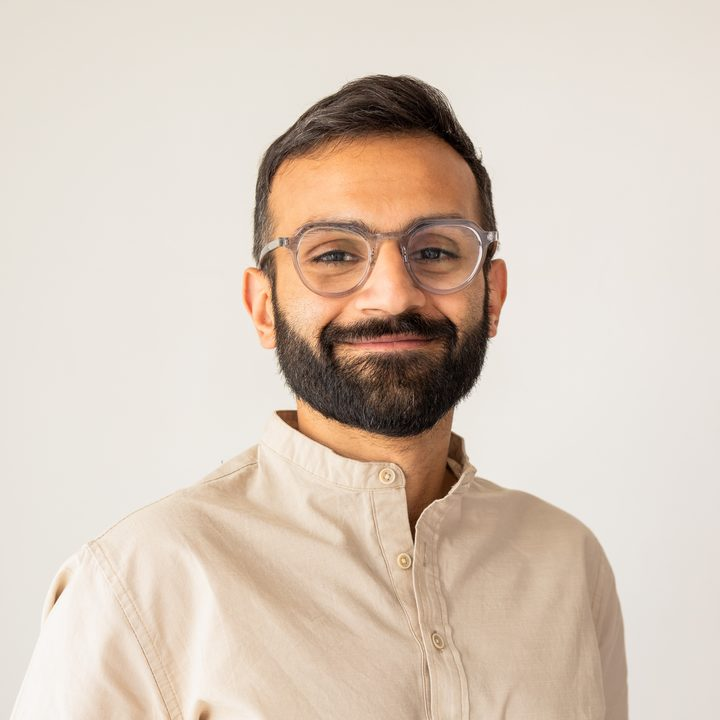
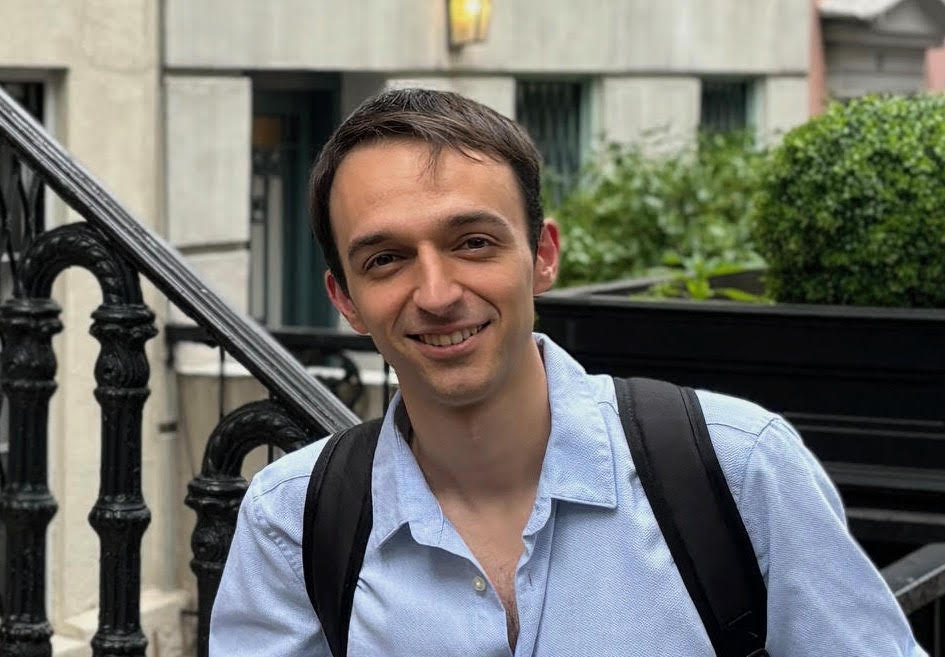

Yifan Chen
UCLA

UCLA

Microsoft Research New England

MIT

Cornell University

MIT

Carnegie Mellon University

Georgia Tech
Flatiron Institute

National University of Singapore
TU Berlin
University of Washington
Microsoft Research New England

University of British Columbia

Microsoft Research New England
University of Oxford
Tuesday, November 17 · 9:30 – 11:30 AM · Room 252
| – | Dynamic Measure Transport Can Improve the Learning of Energy-Based ModelsOmar Chehab, Carnegie Mellon University |
| – | Enhancing Diffusion Language Model by a Provably Scalable Test-Time Scaling MethodMolei Tao, Georgia Tech |
| – | Diffusion-Based Annealed Boltzmann Generators: Benefits, Pitfalls and HopesLouis Grenioux, Flatiron Institute |
Tuesday, November 17 · 2:15 – 4:15 PM · Room 252
| – | Localized Diffusion ModelsShuigen Liu, National University of Singapore |
| – | Learning Jump-Diffusion Dynamics from Irregularly Sampled Time SeriesOnno Pfohl, TU Berlin |
| – | Interpolant Choice for Conditional Transport ModelsAlex Johnson-Vázquez, University of Washington |
Wednesday, November 18 · 9:30 – 11:30 AM · Room 252
| – | Bridging Non-Equilibrium Simulation and Probabilistic Machine LearningYuanqi Du, Microsoft Research New England |
| – | A Simple Recipe for CREPE: Controlling REPlica-Exchange via Neural TransportsSaifuddin Syed, University of British Columbia |
| – | Rare Event Estimation via Stochastic Optimal ControlCarles Domingo-Enrich, Microsoft Research New England |
| – | Accelerating Alignment in Generative ModelsPeter Potaptchik, University of Oxford |